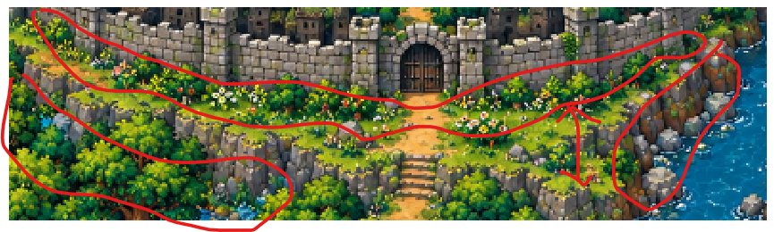

r022: bỏ các đạo cụ bị khoanh và thay thảm thực vật.
Các vùng khoanh đỏ trước thành · r021
Ảnh bạn chỉ định

Trước · r020

Trong game · r021

Đã xử lý
- Thân thành có40 lớp theo chân cong: bụi cây ở hai cánh không còn bị một ảnh thành lớn che mất.
- Bổ sung19 cụm bụi/đá thấp;5 cây nhỏ xen chân vách trái.
- Đá sườn phải fit chiều cao mặt vách, nối đỉnh gò xuống chân sát sông.
- Lối vào cổng, va chạm nước và các tuyến đường được giữ.
Kiểm tra browser · Vị trí và điểm bỏ · Thiết kế285Cận chân tường

Cận vách và bờ sông

Chưa đánh dấu toàn cảnh giống hoàn toàn bản mẫu. Lượt này tập trung lỗi lớp vẽ và các cụm môi trường được khoanh, giữ contour địa hình r019.